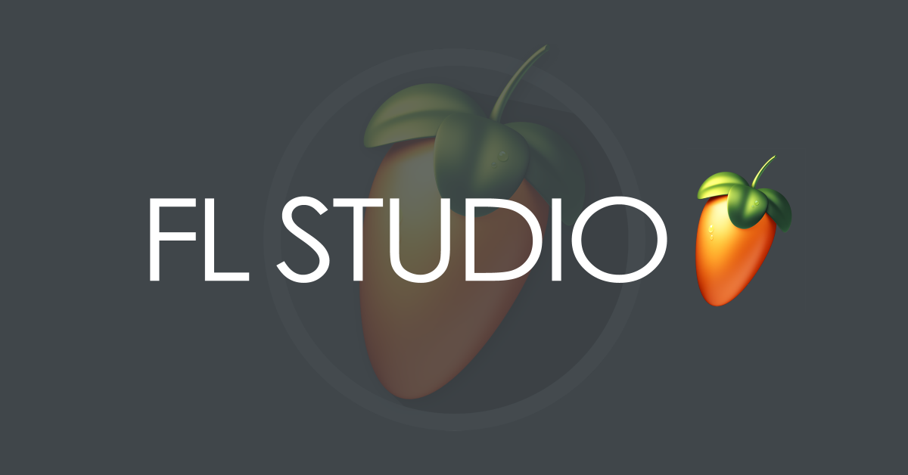

🯠Bienvenido al sitio del Efecto Doppler
Este grupo está conformado por:
- Iván Jeanpierre Canales Samaniego
- Jousthyne Denny Cepda Almeida
- Miguel Angel de la Rosa Mirando
- Jerenmi Shamir Flores Jimenez
- Joel Angel Brito Lopez
En esta página web estaremos explicando:
¿Qué es el Efecto Doppler?
Descubre los fundamentos de este fenómeno fÃsico
Ejemplos del Efecto Doppler
Situaciones cotidianas donde se manifiesta
Fórmula del Efecto Doppler
Ecuaciones matemáticas que lo describen
Aplicaciones del Efecto Doppler
Usos prácticos en ciencia y tecnologÃa
🵠Experimento con FL Studio
Realizaremos un experimento práctico utilizando FL Studio para demostrar el efecto Doppler en el ámbito musical y sonoro.
